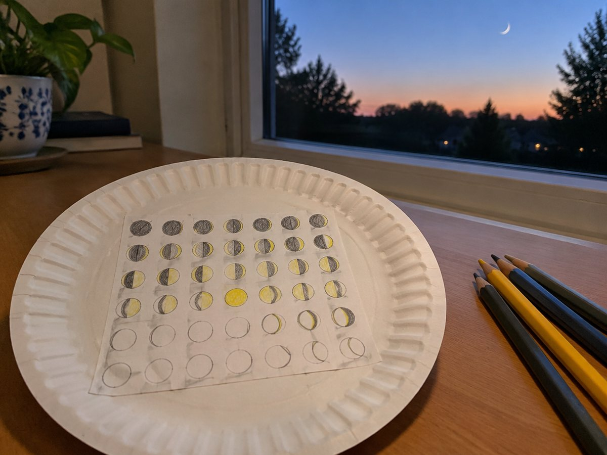

종이접시 달 모양 달력

한 달 동안 밤하늘의 달을 관찰해 종이접시 달력에 그리고, 달 모양이 바뀌는 차례를 찾아요.
만들기 20분 · 관찰 한 달 · 난이도 ★☆☆ 쉬움
준비물
- 종이접시 1개 — 달력판으로 써요 (없으면 상자 판을 동그랗게)
- 달 관찰 달력 도안 — 30칸 달력과 달 모양 5단계 카드
- 연필, 색연필 — 본 모양 그대로 칠해요
- 손전등, 공 (선택) — 달 모양이 바뀌는 까닭을 실험해요
- 가위, 풀 — 달력을 오려 종이접시에 붙여요
실험 방법
- 달력 붙이기
도안의 30칸 달력을 오려 종이접시에 붙여요. - 매일 같은 시각에 보기
저녁 같은 시각에 같은 곳에서 달을 찾아요. 보이는 모양을 칸에 그대로 칠해요. 구름 낀 날은 '구름'이라고 적어요. - 이름 붙이기
모양 카드를 보고 초승달, 상현달, 보름달, 하현달, 그믐달 중 무엇인지 적어요. - 차례 찾기
한 달이 지나면 달력을 보며 달 모양이 어떤 차례로 바뀌었는지 이어 말해요. - 손전등 실험
어두운 방 한쪽에 손전등을 켜서 고정해 두고(태양), 공(달)을 팔을 뻗어 얼굴 앞에 든 채 제자리에서 천천히 한 바퀴 돌아요. 공의 밝은 부분이 어떻게 보이나요?
관찰해 봐요
- 보름달 다음에는 달이 어느 쪽부터 줄어드나요?
- 같은 모양의 달이 다시 보이기까지 며칠쯤 걸리나요?
- 달은 왜 날마다 모양이 바뀌어 보일까요?
왜 그럴까?
달은 스스로 빛을 내지 않고 햇빛을 받아 반사해요. 달이 지구 둘레를 돌면서 우리에게 햇빛 받은 부분이 보이는 만큼만 밝게 보이기 때문에, 날마다 모양이 달라 보여요. 달 모양은 약 한 달마다 다시 처음으로 돌아와요.
학교 교육과정 연결
- [4과13-01] 달의 모양과 표면, 달의 위상변화를 관찰하여 밤하늘 관찰에 흥미를 가질 수 있다.